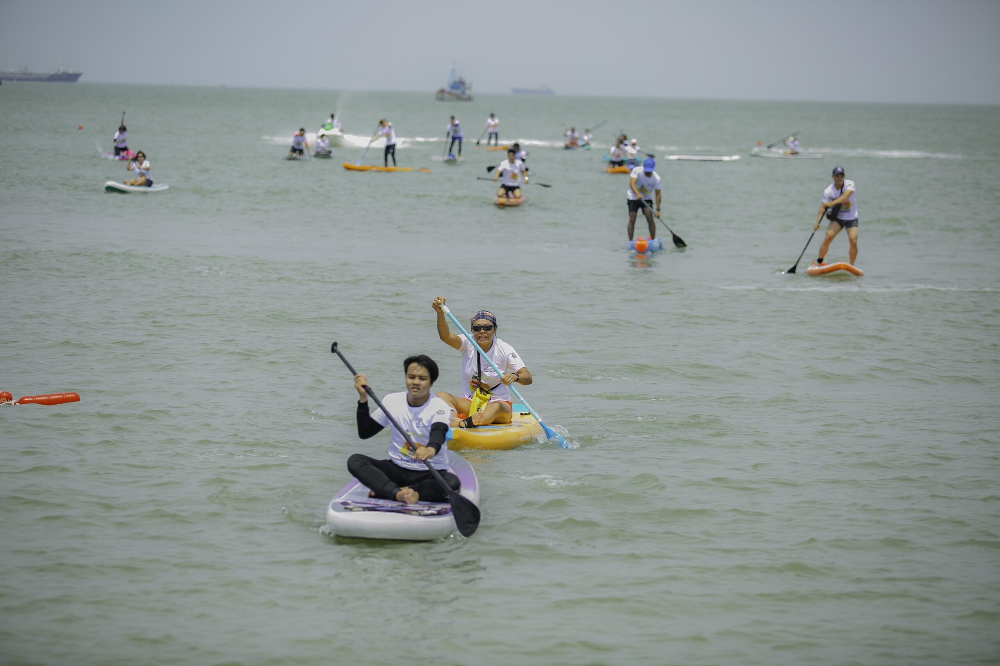

サーフィン体験
バックビーチは波が穏やかで、初心者にもおすすめのサーフスポットです。現地のインストラクターが丁寧に指導してくれるので、初めてでも安心。波に乗った瞬間の爽快感は格別で、海と一体になる感覚が味わえます。サーフィンの後は海辺のカフェでリラックスしながら、心地よい疲れを感じるのもブンタウならではの楽しみです。
バックビーチは波が穏やかで、初心者にもおすすめのサーフスポットです。現地のインストラクターが丁寧に指導してくれるので、初めてでも安心。波に乗った瞬間の爽快感は格別で、海と一体になる感覚が味わえます。サーフィンの後は海辺のカフェでリラックスしながら、心地よい疲れを感じるのもブンタウならではの楽しみです。
地元漁師と一緒に漁船に乗り、実際に釣りを体験できるツアーが人気です。朝の海風を受けながら糸を垂らす時間は、静かで贅沢なひととき。釣れた魚はその場で調理して食べることもでき、まさに「海の味」を五感で楽しめます。自然と人のつながりを感じる貴重な体験です。
ブンタウは比較的平坦な地形のため、自転車での観光に最適です。旧市街のカフェ通りや市場、港周辺をゆっくり走れば、観光地図には載っていない町の表情に出会えます。潮風を感じながら走るサイクリングは、心を解き放つような爽快感があります。
海に面したスパリゾートでは、海藻パックや塩スクラブを使ったトリートメントが人気。旅行の疲れを癒しながら、肌も心もリフレッシュできます。自然の恵みを感じる贅沢な時間は、ブンタウ滞在をより特別なものにしてくれます。
夕暮れ時に出発するサンセットクルーズは、ブンタウの新たな魅力を発見できる体験です。船上から見る夕陽は、海と空が一体となる幻想的な光景。ゆっくりと沈む太陽とともに、ブンタウの一日が静かに終わりを迎えます。ロマンチックな時間を過ごしたい人におすすめです。